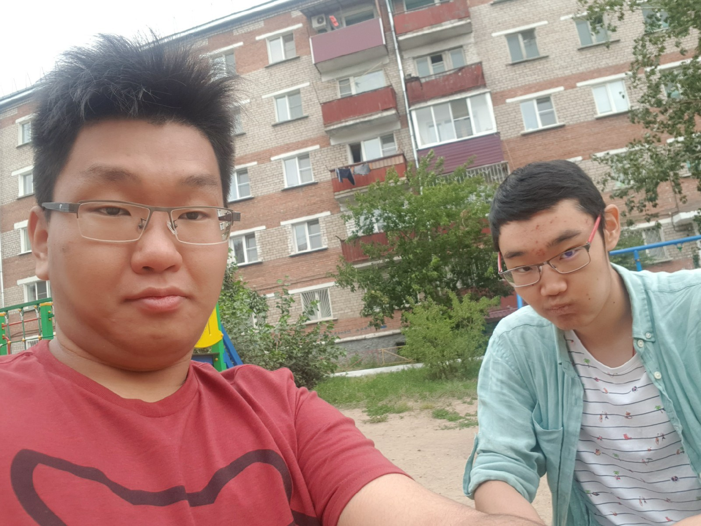

About Myself
Hello. This is Arsalan and I am a 21 year old international student. I am from Russia, to be precise from a city called Ulan-Ude, it's a relatively small city of roughly 400 thousand people famous for having biggest statue of Lenin's head, and it is the capital of the Republic of Buryatia, one of Russia's many regions. I came to Canada to pursue education and become a quality specialist.
I haw a few hobbies, including:- Playing video games. Right now I am playing mostly Dead by Daylight and Rebel Inc.
- Walking, but only when it's not hot. I hate summer.
- Listenning Music. Classical hits me the most.
Prior to the Interactive Media Design program, I was studying Game Development, also in Algonquin College. I studied for 4 terms, and the decision to change my program wasn't an easy one. I hated leaving the program this late, and I had a fight with my mother, but ultimately I couldn't be a game developer, this wasn't my profession. The last thing I want to do with my life is to something I dislike every single day.
I must admit though that I am also naturally prone to overconfidence leading to procrastination. I sometimes feel the task is so easy to do that I just end up leaving it for later. Even this assignment, I am doing it at 5 am of June 10th, 2022. This overconfidence was one of the reasons I failed my Game Development program, I just kept postponing things thinking they are so easy. Hence, I want to end my introducton with a quote from one of my favorite games and pledge to work harder:
"Remind yourself that overconfidence is a slow and insidious killer" - Ancestor, the Darkest DungeonBtw, some tags were used in here. the notes include description of some of them!